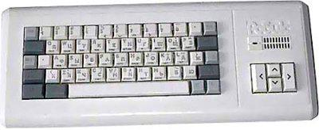

about me
“Programming isn't about what you know; it's about what you can figure out.”
― Chris Pine, Learn to Program
Немного ностальгии ... или о том, как я познакомился с компьютерами.
Первое знакомство с удивительным миром компьютеров произошло в начале 90х, когда стал владельцем клона "ZX Spectrum" - Робик.

До сих пор с умилением вспоминаю поездки по всему городу в поисках кассет с софтом, бессонные ночи с прохождением графических!!! игр и первые программки на Basic , а также бесконечную подстройку магнитофона, 5-ти минутные загрузки с магнитных лент и обрыв почти в самом конце (но первой любви простительны эти мелкие ...неудобства, особенно, когда у тебя собирается куча одноклассников и ты числишься чуть-ли не 'магом').
После этого последовал 486й компьютер и череда различных машин: Cyrix, Duron итд., Turbo Pascal , стопки журналов "Компьютерное обозрение", особенно заинтересовали статьи Андрея Зубинского, с его интригующим, необычным и завораживающим подходом к описанию сложнейших тем и рассказами о выдающихся личностях, которые изменили облик IT-сферы.
Очередным всплеском интереса к компьютерным технологиям стало знакомство с Linux после покупки книги с дистрибутивом на CD-ROM и затем последовавшие бесконечные споры c друзьями, что лучше - Винда или Линукс.
Через пару лет столкнулся и с web-программированием, удалось запустить несколько простых сайтов и форумов для друзей и знакомых (игровой сайт и форум для любителей Starcraft/Warcraft, небольшой университетский сайт для любителей "Что? Где? Когда?"). Для экономии на хостинге выбор пал на CMS, которой не требовалась база данных MySQL. В те годы мне не удалось найти бесплатный хостинг с MySQL, поэтому использовал CMS Siteman 2 с встроенной текстовой базой данных.
Let dreams come true
Наконец-то появилась возможность и время начать вести блог. В данный момент очень интересуюсь всем,что связано с миром Python, активно изучаю Django.

Поэтому здесь постараюсь делиться мыслями о своём опыте использования различных модулей, технологий.